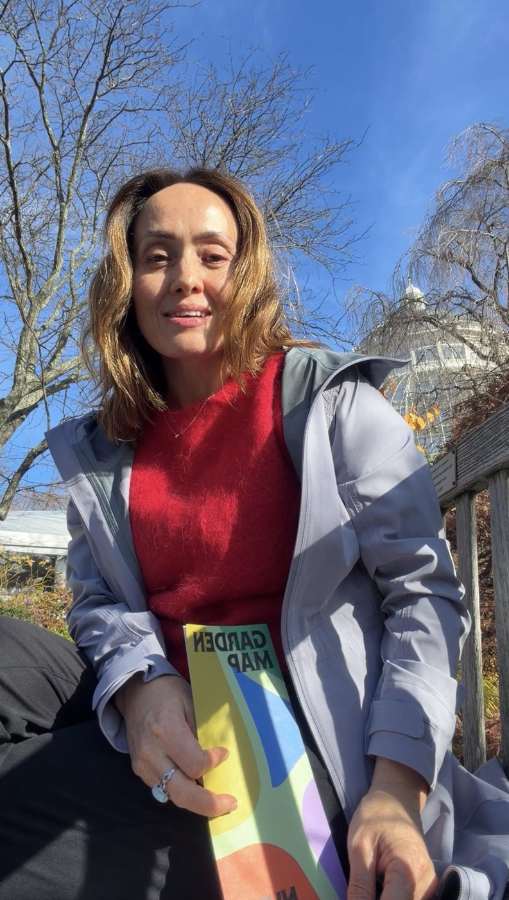
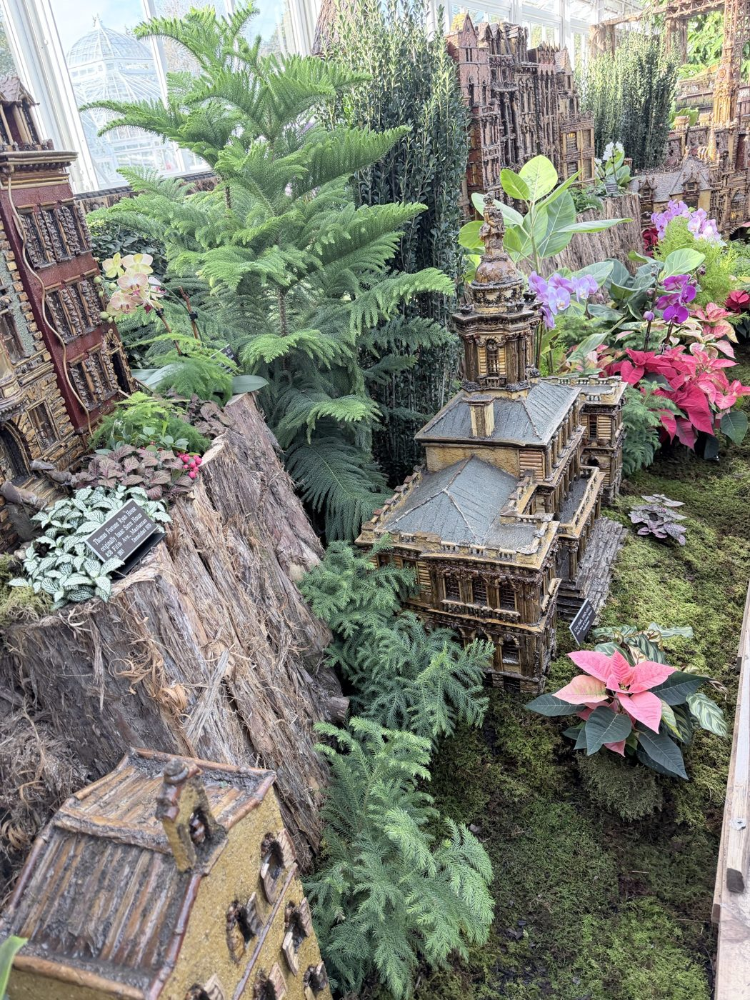
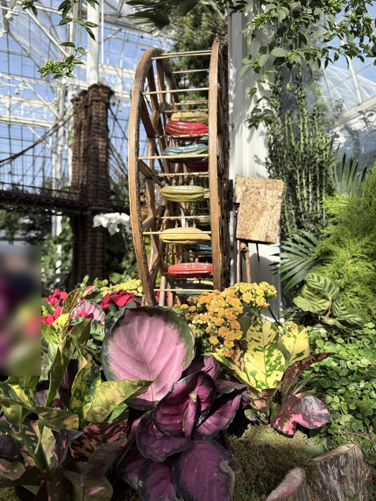
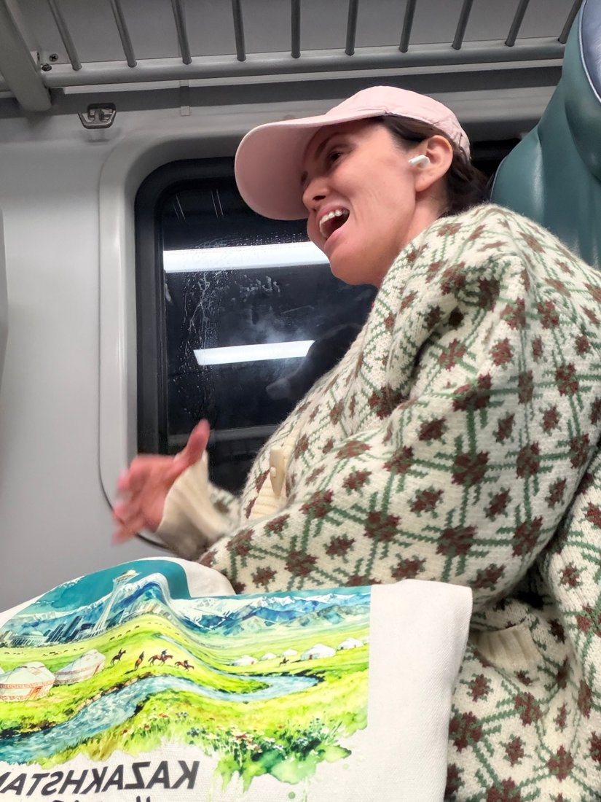

заметка из работы над «Ветрушей» · ноябрь 2026
🌴 Под стеклянным куполом

на той же скамейке, но другой
Некоторые дни вмещают в себя два времени года.
Пятница закончилась темнотой. Тяжёлая чужая история в новостях, старая боль, которая снова проснулась, и вопрос, который рано или поздно задаёт себе каждая женщина: почему зло всё равно находит дорогу, даже в мужчинах, от которых его никак не ждёшь? В ту ночь я говорила со всеми женщинами, которыми когда-то была: Ты в безопасности. Я тебя вижу. Ты не виновата.
В субботу утром я села на поезд до Бронкса и поехала в сад, куда когда-то убегала, чтобы просто дышать. Там я лежала на скамейке как женщина, которая никому не принадлежала, даже самой себе. Теперь я пришла как героиня своей истории. Светило солнце. На мне был красный. Я познакомилась с новыми людьми. Под стеклянным куполом расстелили маленький Нью-Йорк из коры и веток, а пальмы тянулись к свету, вдыхая влажность и экзотическое тепло.
под стеклянным куполом
героиня своей истории

Нью-Йорк из коры и веток
маленький Манхэттен
пальмы тянутся к свету
Тропический лес растёт слоями, и его опавшие листья становятся пищей, для роста или для падения.
С людьми так же. Свет и тень, радость и боль — всё это слои одной живой системы, и ни один из них не определяет нас целиком.
Логика, которая служит эго, кружит, как вода в воронке, и всегда тянет вниз. Но душа ведёт и выбирает направление, а логика ищет как туда дойти. А не наоборот.
Тёмная половина этой истории живёт в книге. А сегодня я делюсь светом.

слои
душа выбирает, логика прокладывает путь
делюсь светом ☀️
Holiday Train Show · Нью-Йоркский ботанический сад (NYBG), оранжерея Энид Хаупт · Бронкс · была 21 ноября 2026 с группой SUNY Empire · выставка открыта до 10 января 2027
🎵 песня для этого света: Sparky Deathcap — September (instrumental)
P.S. А накануне, посреди обычной тяжёлой недели, моя руководительница просто сказала: «Это была твоя работа, и признание — твоё». Она могла оставить это себе, но отдала мне. Иногда одно честное «это твоё» — тот самый свет, который помогает выйти из тени, как стеклянный купол, что пропускает солнце, чтобы пальмы росли сильными.

«это твоё»

«это твоё»